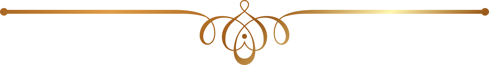

Лучшая статья

Зорба-Будда
Будда — это пик, но камни фундамента лежат на Зорбе. Было бы глупо выбирать быть Буддой, не имея фундаментной основы.
Я абсолютно точен в этом: Зорба должен быть, и чем сильнее Зорба, тем больше возможности для Будды.
Итак, чтобы я мог стать Буддой в любой момент, Зорба абсолютно необходим как базовая энергия, из которой будет создан Будда. ❉ Читать всё ❉
Я абсолютно точен в этом: Зорба должен быть, и чем сильнее Зорба, тем больше возможности для Будды.
Итак, чтобы я мог стать Буддой в любой момент, Зорба абсолютно необходим как базовая энергия, из которой будет создан Будда. ❉ Читать всё ❉
| 711 |